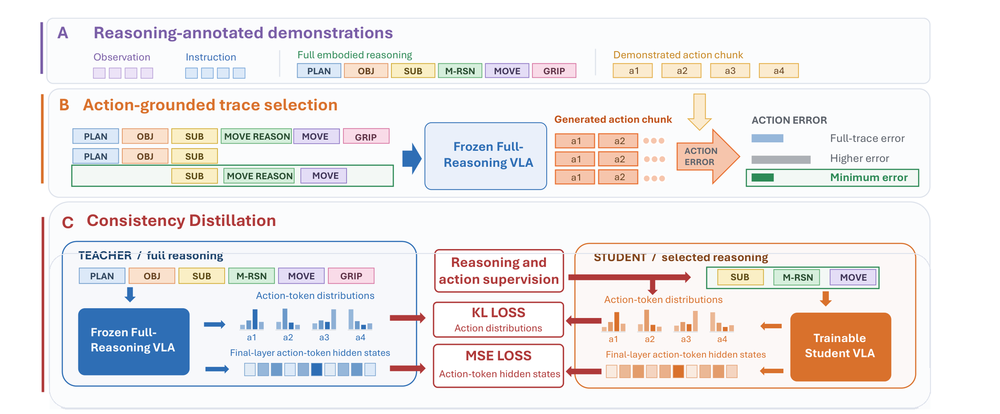

Abstract
Robot chain-of-thought (CoT) reasoning can improve the performance and generalization of Vision-Language-Action (VLA) policies by generating intermediate reasoning before predicting actions. However, embodied CoT policies typically produce long, structured reasoning traces at every control step, substantially increasing inference latency even when many reasoning primitives are not relevant to the current state. To this end, we propose a novel offline approach for adaptive embodied reasoning that teaches a VLA when to reason, what to reason about and how much reasoning to generate at each control step. Starting from a full-reasoning policy, we use its own action predictions to identify compact, action-predictive reasoning traces and learn them through self-distillation while preserving action behavior.
Extensive experiments across simulated benchmarks and real-world manipulation show that AWARE reduces generated reasoning primitives by up to 30% in simulation and by 40.9% on a real-world WidowX robot, while maintaining task success comparable to Full Reasoning. We further find that its reasoning changes systematically across manipulation phases, adapting both how much it reasons and what it reasons about to the current control state. Finally, causal interventions demonstrate that this reasoning directly affects control: using otherwise correct reasoning at the wrong manipulation phase drops task success from 88% to 46%.
Video
Overview video (2 min, narrated).
Method
We consider autoregressive reasoning VLAs that generate a structured sequence of reasoning primitives (for example PLAN, VISIBLE OBJECTS, SUBTASK, MOVE and GRIPPER POSITION) before predicting the action in the same sequence. Our key idea is to use action prediction as a task-grounded signal for determining which reasoning is relevant in each state. Intuitively, if removing a reasoning primitive increases the action-prediction error, that primitive contains information relevant to the current action. Conversely, reasoning that can be removed without degrading action prediction is a natural candidate to omit.
Action-grounded trace selection. Conditioned on a candidate reasoning trace, the frozen full-reasoning policy predicts an action chunk, which we compare to the demonstrated action using the L1 norm:
We select the candidate with the lowest action-prediction error, and use trace length solely to break exact ties. Thus, action prediction takes priority over reasoning reduction. Because this selection is performed independently at every control state, the same reasoning primitive may be retained for one action and omitted for the next.
Consistency distillation. We initialize a frozen teacher and a trainable student from the same full-reasoning policy. The teacher is conditioned on the full reasoning trace, while the student is trained on the selected trace. A KL term matches the student's action-token distribution to that of the teacher, and a hidden-state term aligns their final-layer action-token representations. Together, these objectives encourage the student to change how it reasons while preserving how it acts. Omitted reasoning primitives retain their field boundaries while their content is replaced by a single atomic <skip> token. At inference time, AWARE generates its selected reasoning and action autoregressively in a single policy call, without candidate evaluation or an external routing model.

Real-robot rollouts
We apply the same offline post-training procedure to OpenVLA-ECoT and deploy the resulting adaptive policy on a WidowX robot. We evaluate four pick-and-place tasks in two environments, with 24 episodes per task and 96 episodes per method. The rollouts below overlay the generated reasoning on the camera view: bounding boxes from VISIBLE OBJECTS, the predicted GRIPPER POSITION with its recent history and predicted path, and the current SUBTASK and MOVE. Bounding boxes are temporally smoothed for visualisation. The labels below each rollout indicate which of the seven reasoning primitives are generated at the current policy query (orange) and which are replaced by the <skip> token (grey).
Put the eggplant in the pot
Put the brush on the blue towel
Figure 3. Across four real-world tasks AWARE achieves task success comparable to Full Reasoning while reasoning selectively. During deployment the average skip rate reached 40.9%, reducing generated output tokens by 18.5%. Teal bars report AWARE's primitive retention rate per task: the fraction of the seven reasoning primitives generated per query, averaged over 24 episodes (59.1% overall, i.e. a 40.9% skip rate).
AWARE adapts what it reasons about across manipulation phases
AWARE does not learn a fixed compression of the full reasoning trace. We group policy queries by manipulation phase and measure how often each reasoning primitive is retained. Both the amount and content of its reasoning vary over the course of control: different primitives become relevant at different stages of manipulation, and the same primitive can be retained for one action and omitted for another. On LIBERO-90, the overall skip rate increases by 47.5 percentage points from grasp to alignment, and MOVE reasoning is skipped 67.9 points more often during release than during transport. On RoboCasa, next-motion reasoning is retained most frequently during transport and less frequently during release, while gripper-path reasoning is retained most often during alignment and release.
Figure 4. Average retention of each RoboCasa reasoning primitive over 200 evaluation episodes, grouped by manipulation phase. Next-motion reasoning is emphasized during transport and reduced at release, while gripper-path reasoning is retained most during alignment and release.
Figure 5. On LIBERO-PRO, AWARE matches Full Reasoning across object, environment and position perturbations, and also improves performance on the RoboCasa target-position shift, where AWARE reaches 26.3% success compared with 22.5% for Full Reasoning and 2.5% without reasoning.
Action-relevant reasoning causally affects control
We test whether the reasoning retained by AWARE causally affects control rather than merely correlating with the manipulation state. At a matched reasoning budget we re-decode actions from the policy's own unchanged trace, corrupt a frequently or rarely selected primitive, reverse directional terms, or replace the whole trace with valid reasoning generated in another episode of the same task, from the same or a different manipulation phase. To isolate the effect of reasoning content from reasoning length, all intervened traces are padded or truncated to match the reasoning budget of the original policy query.
Re-decoding unchanged reasoning leaves performance unchanged, while corrupting action-relevant reasoning causes a substantially larger drop in task success than corrupting low-relevance reasoning. Replacing the native trace with reasoning from another control state reduces performance by up to 41.8 points on LIBERO and 22.2 on RoboCasa. On LIBERO, this degradation is larger for contrasting-phase than same-phase replacements, while both replacement conditions perform similarly poorly on RoboCasa. Thus, effective control depends not only on generating reasoning, but on generating reasoning whose content is appropriate for the current control state.
Figure 6. Re-decoding unchanged reasoning leaves performance unchanged. Corrupting action-relevant reasoning causes a larger drop than corrupting low-relevance reasoning, and replacing the native trace with reasoning from another control state degrades performance further on both benchmarks.
Results
We evaluate MiniVLA on LIBERO-90 (seven ECoT-Lite primitives) and on two RoboCasa pick-and-place tasks with a Kinova Jaco (three BAR-X primitives), and OpenVLA-ECoT on the WidowX robot. AWARE is post-trained from the converged full-reasoning checkpoint and compared against No Reasoning and Full Reasoning baselines.
Figure 7. AWARE remains close to Full Reasoning on both LIBERO-90 and RoboCasa while retaining the large performance gain from explicit reasoning on RoboCasa (32.0% vs. 11.5% without reasoning).
BibTeX
@article{sukup2026aware,
title = {Think Less, Act Better: Adaptive Reasoning for Vision-Language-Action Models},
author = {Sukup, \v{S}imon and Wilcox, Albert and Albanese, Giuliano and Brander, Carl and Meijer, Isar and Tan, Reuben and Pollefeys, Marc and Mees, Oier},
journal = {Under review},
year = {2026}
}